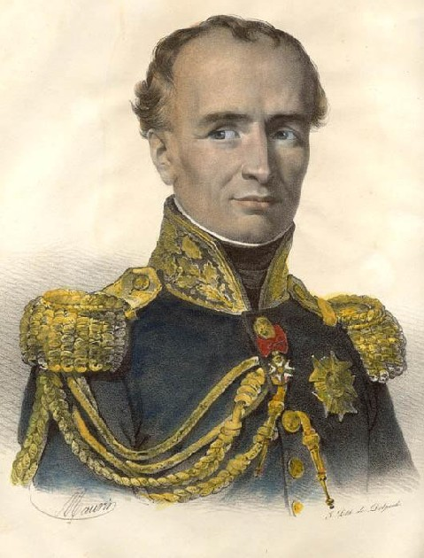
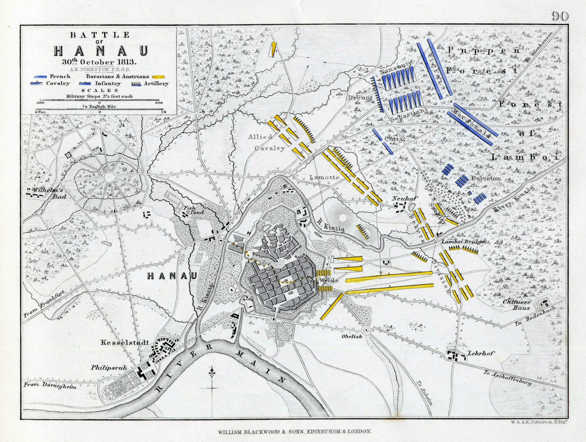
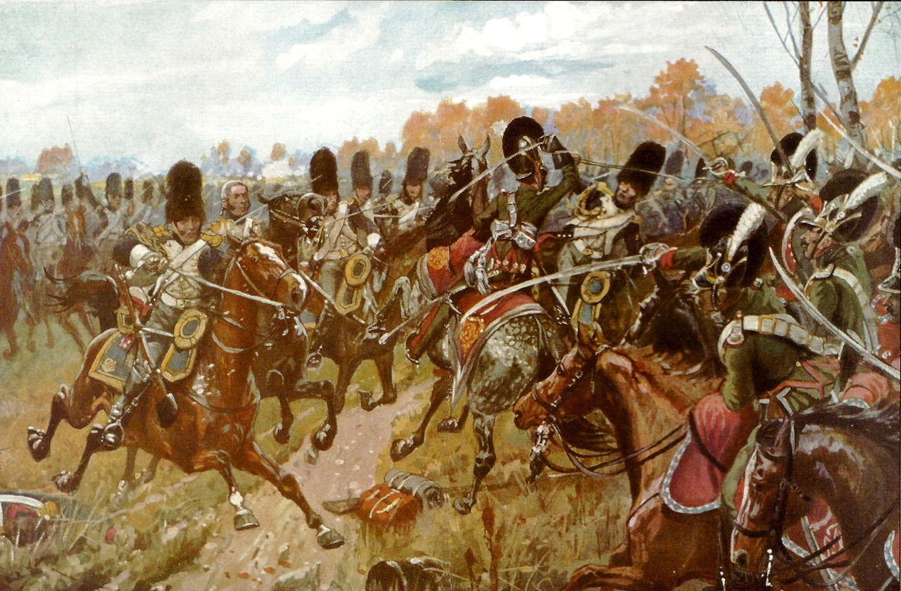
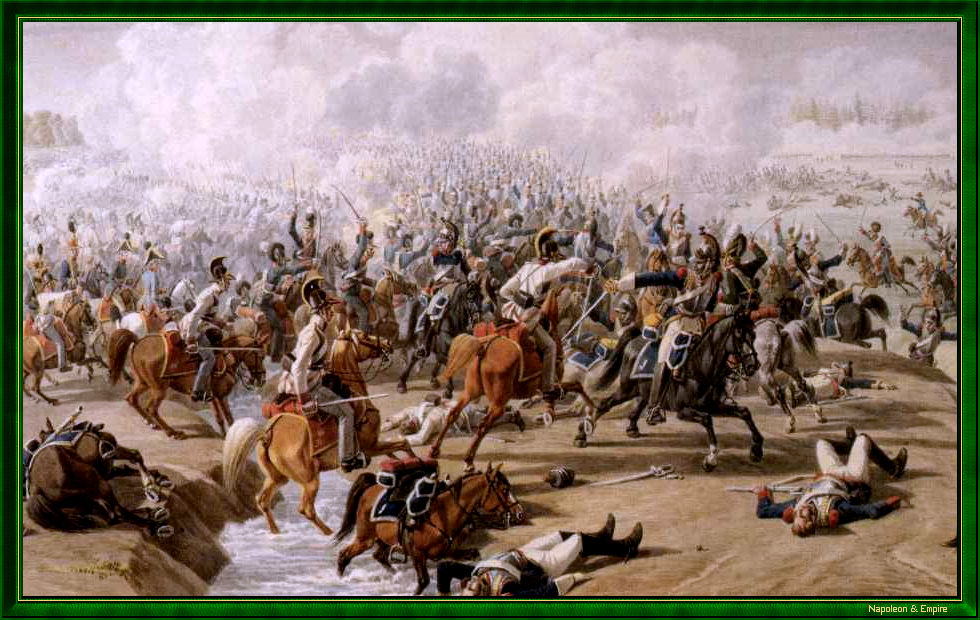
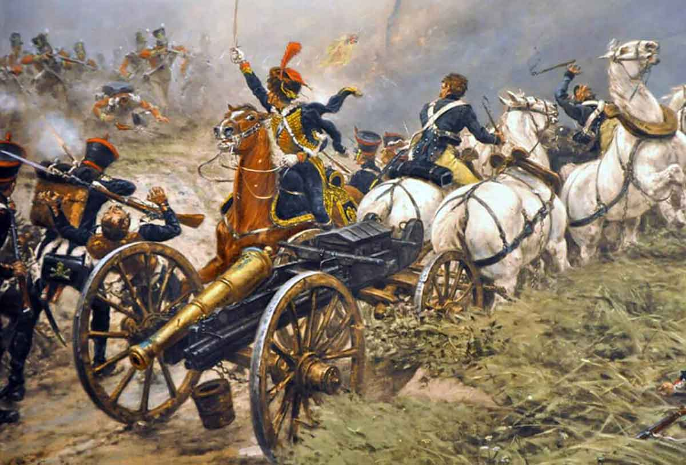
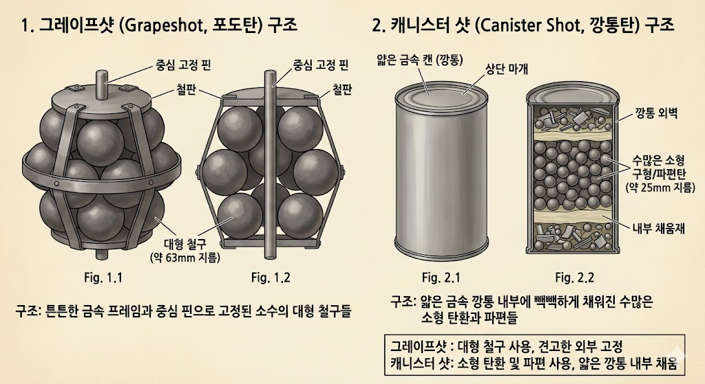
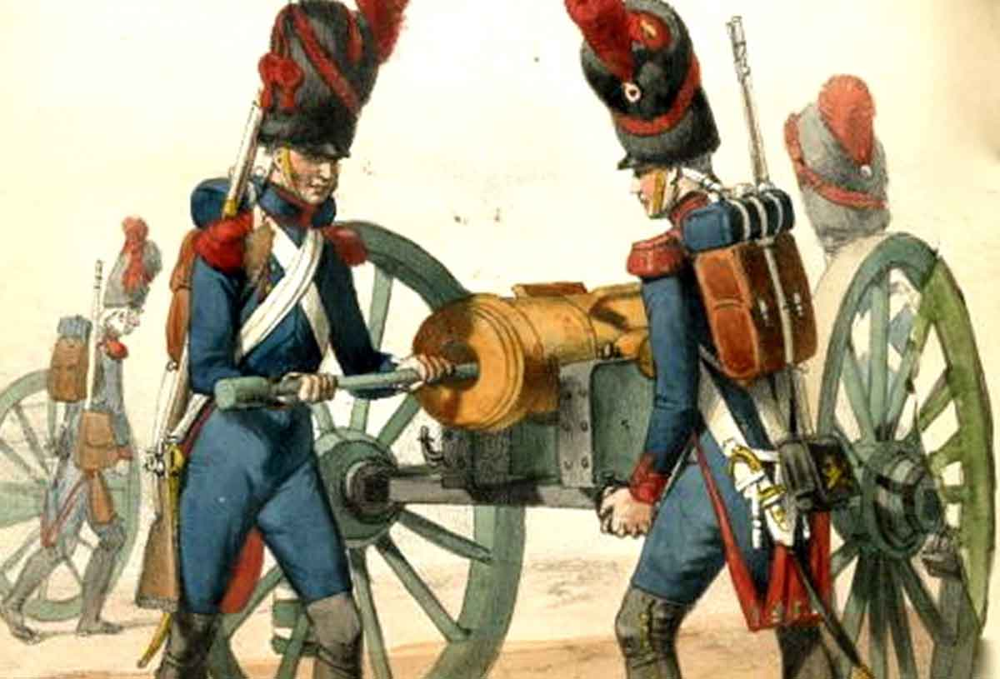
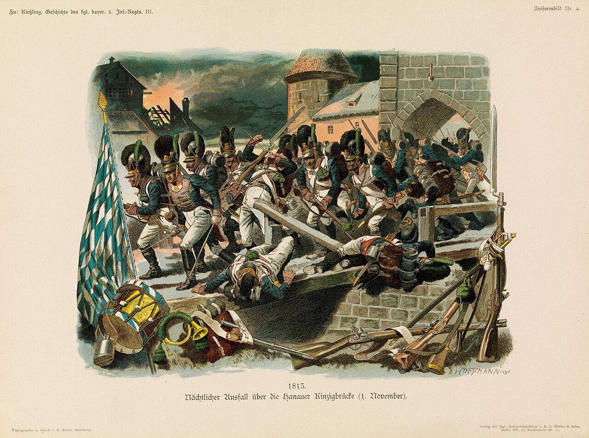
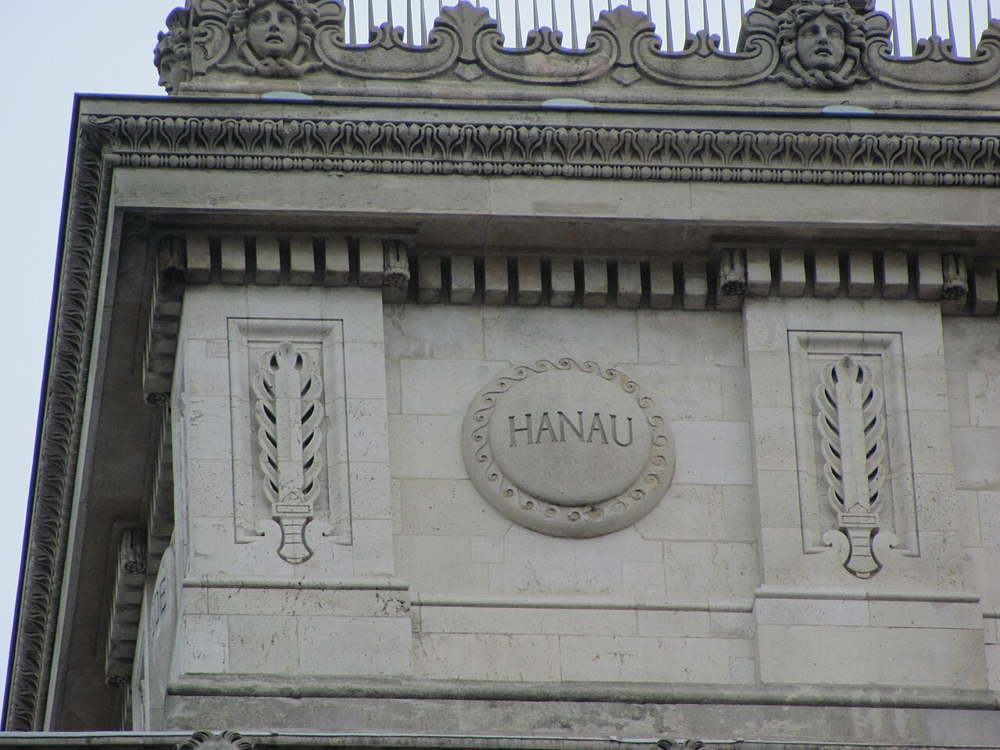

하나우 전투 (4) - 독일에서의 마지막 승리
게시: 2026-06-15T06:30:53+09:00
몇 시간 째 브레더의 저지선을 뚫지 못해 초조해하는 나폴레옹에게 다가온 사람은 근위 포병대를 지휘하는 드루오(Antoine Drouot)였습니다. 막도날의 보병들이 개활지로 나가 전진하지 못하고 람보이 숲 안쪽에 웅크리고 있던 이유는 적 포병대의 강력한 포격 때문이었습니다. 적의 포격에 대응하는 정석은 바로 포병으로 대응하는 것이었는데, 왜 나폴레옹은 여태껏 드루오에게 포병대 전개를 명령하지 않았을까요? 숲이 너무 빽빽하고 좁아 수십 문의 포병대를 한꺼번에 움직일 통로와 공간이 없었기 때문이었습니다. 그런 점에서는 브레더가 킨지히강을 등지는 무리수를 두고서라도, 람보이 숲 바로 앞에 저지선을 구축한 것이 매우 효과적인 작전이었던 셈입니다. 나폴레옹의 포병대가 전개할 공간을 주지 않는 압박 수비였던 것입니다. 상대의 압박 수비로 인해 포병대가 전면에 나설 틈을 찾지 못할 경우 포병대 지휘관은 무얼 해야 할까요? 평범한 지휘관이라면 그냥 명령을 기다리며 후방에서 부하들 단속을 하고 있었을 것입니다. 그러나 드루오는 대수학자 라플라스가 극찬할 정도로 뛰어난 두뇌의 소유자이자, 어린 시절 빈곤 속에서도 어떻게든 공부를 해냈던 근면성실한 지휘관이었습니다. 그는 가만히 있지 않고 최전방까지 나아가 적 포병대의 방열 상태와 람보이 숲 구석구석의 통로 및 공간 상태를 직접 확인했습니다. 그 결과, 숲 밖에서는 보이지 않지만 포병대가 이동할 정도로 넓은, 숨겨진 벌목꾼들의 통나무 운반로를 찾아냈습니다. 그 통로를 통하면 브레더의 좌익 앞으로 수십문의 대포를 몰래 이동시킬 수 있었습니다.

(앙투완 드루오입니다. 나폴레옹보다 5살 연하인 그는 가난한 제빵사의 12명 자녀 중 세째로 태어났습니다. 어려서부터 똑똑하고 공부를 잘하여 그를 가르치던 동네 수도원의 추천으로 장학금을 받고 낭시 대학의 외부수강생이 되기도 했습니다. 거기서도 두각을 나타낸 그는 혁명 발발 이후 창설된 샬롱-장-샹파뉴(Châlons-en-Champagne) 포병학교에 19세의 다소 늦은 나이로 지원했는데, 경쟁률이 8대1로 치열했습니다. 그는 돈이 없었으므로 150km 거리를 걸어서 시험을 보러 갔고, 거기서 유명한 과학자 라플라스(Pierre-Simon Laplace)를 의장으로 하는 시험관들의 구두시험에서 1위로 입학했습니다. 그때 정말 시험을 잘 봤는지, 나중에 라플라스가 나폴레옹을 만났을 때, 라플라스는 나폴레옹에게 '자신이 주재한 시험에서 가장 인상 깊었던 수험생은 폐하의 부관으로 있는 드루오 장군이었다'라고 말했습니다.) 그리고 드루오가 보니, 브레더의 포병대는 총 90여문의 대포를 갖추고 있었으나, 절반 정도는 킨지히강 남쪽 너머에 있는 우익에 배치되어 있었습니다. 게다가 킨지히강 북쪽에서도 중앙과 좌익에 걸쳐 분산 배치되어 있었으므로, 브레더의 좌익에는 28문의 대포만 있었습니다. 결국 이 28문만 제압하면 브레더의 좌익을 무너뜨리는 것은 어렵지 않아 보였습니다. 그는 나폴레옹에게 자신의 생각을 건의했고, 나폴레옹은 즉시 그 안을 승인하며 공격 계획을 수립했습니다. 요약하면 드루오가 포병대를 조금씩 몰래 전진시키는 동안, 브레더의 좌익을 집중 공격하기 위해 근위대의 기병대와 보병대를 그 근처에 전진 배치한다는 것이었습니다. 드루오의 포병대는 무사히 50문의 대포를 적의 눈에 띄지 않은 채 옮길 수 있었고, 곧바로 브레더 좌익에 배치된 바이에른-오스트리아 포병대에 대해 포격을 개시했습니다. 수적으로도 2대1로 우세했으므로 사실 결과는 뻔했습니다만, 연합군도 의외로 분전하며 쌍방의 포격전은 거의 1시간 가까이 지속되었습니다. 그러나 바이에른-오스트리아군은 확실히 준비가 부족했던 모양입니다. 나폴레옹이 라이프치히에서 후퇴한 결정적 이유 중 하나가 포병대의 탄약 부족이었으므로 근위포병대에도 탄약이 풍부한 편은 아니었을 텐데, 뜻밖에도 바이에른 포병대의 탄약이 금새 바닥이 난 것입니다. 결국 연합군 포병대는 꼬리를 말아쥐고 후퇴해야 했습니다.

(1813년 10월 30일 하나우 전투의 전개도입니다. 병력은 브레더 쪽이 2배 이상 많았으나, 킨지히강으로 분단되어 있어서 절반 정도의 병력은 아무 것도 할 수가 없었습니다.) 한창 대포알이 날아다니는 최전선에서 후퇴하는 것도 쉽지 않은 일이었습니다. 그 후퇴를 엄호하기 위해, 오스트리아 기병대 7천이 튀어나와 돌격을 감행했지만 그건 이미 예상된 수순에 불과했습니다. 드루오의 포병대가 쏟아붓는 포탄으로부터 입을 피해를 최소화하기 위해, 이들은 약 800m를 전속력으로 달려왔습니다. 그러나 드루오의 근위 포병대는 이를 보고는 구형탄(roundshot) 대신 캐니스터탄(cannister shot)을 재워두고 있었고, 800m를 달려오느라 지친 기병대가 50m까지 접근하자 침착하게 캐니스터탄을 쏘아댔습니다. 뼈와 살로 된 말과 사람은 절대 그 납과 불의 폭풍을 이겨낼 수 없었습니다. 피범벅 속에서 혼란에 빠진 오스트리아 기병대를 향해 이어서 드루오 바로 뒤에서 대기하고 있던 낭수티(Nansouty)와 세바스티아니(Sébastiani)의 기병대가 달려들었습니다. 수는 더 적었지만, 50문의 대포에서 뿜어져 나오는 케니스터 세례를 받은 오스트리아 기병대는 순간적으로 멈출 수 밖에 없었고, 속도를 잃은 기병대는 위력이 반의 반으로 떨어지는 법이었습니다. 오스트리아 기병대는 기세를 잃고 후퇴했습니다.

(하나우 전투에서 프랑스 근위대의 기마척탄병들과 격돌하는 바이에른 기병대의 모습입니다.)

(하나우에서 프랑스 기병대가 바이에른-오스트리아 기병대를 추격하는 모습을 그린 다른 그림입니다.)

(포병이 가장 취약한 순간은 바로 이동하느라 포가를 말에 묶고 풀고 할 때입니다. 그래서 포병은 언제나 보병 또는 기병들의 호위를 받아야 했습니다.) 그랑다르메 기병대는 그 뒤를 추격했으나, 그들도 적 보병들의 빽빽한 전열 바로 앞까지만 추격이 가능할 뿐이었습니다. 그러나 그걸로 충분했습니다. 드루오가 그 틈을 이용하여 50문의 대포들을 400m 정도 전진시켰기 때문이었습니다. 그랑다르메 기병대가 후퇴하자, 드루오는 눈 앞에 밀집한 연합군 보병 대오에게 포도탄(grapeshot)을 퍼부었습니다. 그 뒤에는 이미 람보이 숲에서 대오를 갖추고 전진하는 근위대 보병들의 전열이 바짝 뒤따르고 있었고요. 정말 오랜만에 보는 교과서적인 보-기-포병의 연계 작전이었습니다.

(포도탄과 캐니스터탄은 둘 다 일종의 거대한 산탄이라는 점에서 비슷합니다만, 차이는 결국 그 포탄 속에 든 쇠구슬의 크기 차이라고 볼 수 있습니다. 캐니스터샷 속에는 일반 머스켓 소총탄이나 심지어 잔돌조각 등이 잔뜩 들어있었고, 포도탄에는 지름 1~2인치 정도의 꽤 굵은 쇠구슬이 들어있었습니다. 당연히 캐니스터샷이 포도탄보다는 더 많은 적 보병들을 한꺼번에 쓰러뜨릴 수 있었지만, 대신 유효 사거리가 훨씬 더 짧았습니다.)

(나폴레옹 당시의 3개 병종은 보병-기병-포병입니다. 그 중 어느 병종이 가장 강한가 하는 논쟁은 아무 의미가 없습니다. 어떻게 각 병종을 적절히 잘 활용하느냐에 달린 것이니까요. 다만 확실한 것은 각 병종의 급여 수준은 포병이 가장 좋았고, 기병이 다음이며, 보병이 가장 낮은 급여를 받았다는 것입니다.) 이렇게 좌익에 집중된 공격에 전열이 우르르 무너지자, 브레더에게 주어진 선택지는 많지 않았습니다. 후퇴해야지요. 그런데 후퇴하려고 보니 등 뒤인 동쪽은 킨지히강이었습니다. 남은 방향은 북쪽의 숲으로 달아나거나 남쪽에 있는 킨지히강의 좁은 람보이(Lamboy) 다리였습니다. 어떻게 생각하면 북쪽의 숲 속으로 후퇴해야 했습니다만, 그건 브레더로서는 택할 수가 없는 선택지였습니다. 나폴레옹의 추격에서 벗어나고 더 나아가 프랑크푸르트로 향하는 도로를 위협하기 위해서는 하나우 성내로 들어가 농성해야 했는데, 하나우는 킨지히강 남쪽에 있었기 때문이었습니다. 더군다나 패배하여 쫓기는 군대가 숲 속으로 들어갔다가는 수습을 하지 못하고 부대 자체가 흩어져버릴 가능성이 컸습니다. 어쩔 수 없이 브레더는 남쪽의 람보이 다리를 통해 후퇴를 명했습니다. 좁은 람보이 다리를 통해 2만에 가까운 병력이 신속하게 통과하는 것은 불가능한 일이었습니다. 많은 병사들이 등 뒤에서 날아오는 포탄과 총탄, 그리고 더 무서운 총검을 피해 무기를 버리고 킨지히강에 뛰어들었다가 익사했습니다. 더 나쁜 것은, 일이 이렇게 되니 킨지히강 남쪽에 있던 브레더의 우익이 강을 건너와 위기에 빠진 좌익을 구원해줄 길이 막히게 되었다는 것이었습니다. 결국 저녁 6시쯤 끝난 이날 전투에서 브레더의 4만3천 대군은 킨지히강에 의해 분산된 채로 1만7천에 불과한 나폴레옹의 병력에게 참패를 당합니다. 나폴레옹측이 약 4천의 사상자를 낸 것에 비해, 브레더는 6천의 사상자에 더해 4천의 포로를 냈습니다.

(실제로는 람보이 다리 외에도 몇 개의 도보용 다리들이 있었고, 그쪽으로도 꽤 탈출이 이루어졌습니다. 이 그림은 그런 도보용 다리를 이용하여 탈출하는 바이에른군의 모습입니다.) 브레더는 람보이 다리에 미리 폭약을 설치해두지 않아서 다리를 날려버리지는 않았지만, 나폴레옹은 현명하게도 브레더의 뒤를 쫓지 않았습니다. 그는 킨지히강 북쪽에 머문 채로 람보이 숲 언저리에 천막을 치고 그날 밤을 보낼 준비를 했습니다. 늦은 저녁에 마르몽이 이끈 제3 및 제6군단이 도착했는데, 나폴레옹은 마르몽에게 하나우를 점령하여 뒤에서 따라오는 아군의 후퇴에 대한 위협을 제거하라고 명했습니다. 마르몽은 새벽 2시부터 킨지히강 건너의 하나우를 향해 포격을 개시헸고, 시내에 화재가 발생하자 하나우를 지키던 연합군은 후퇴하여 남쪽 벌판의 연합군과 합류했습니다. 마르몽과 베르트랑의 병사들이 그 다음날 아침 빈 하나우를 점령했고요. 브레더는 하나우를 탈환하기 위해 한 차례 공격을 시도했지만 아랫배에 중상만 입었을 뿐, 탈환에는 실패하면서 하나우 전투는 흐지부지 끝나버렸습니다. 이로써 나폴레옹은 여유있게 프랑크푸르트를 거쳐 마인츠에서 라인강을 건널 수 있었습니다. 그는 마인츠에서 군을 재정비하도록 하고는, 본인은 심복들과 함께 서둘러 파리로 향했습니다. 새로 징집을 시행하고 부대를 편성하기 위해서였습니다. 그는 이 군대로 뒤를 추격해오는 연합군을 막아내고 더 나아가 작센 국왕에게 약속했듯이 다시 라이프치히와 드레스덴으로 진격할 생각이었습니다. 그러나 하나우 전투는 그가 독일에서 거둔 마지막 승리였을 뿐만 아니라, 지금 이 날까지도 프랑스군이 독일 땅에서 거둔 마지막 승리였습니다. 결국 프랑스의 영광을 앞세워 프랑스인들의 마음을 사로잡았던 중2병 환자 나폴레옹은 명청 교체기, 아니 불독(佛獨) 교체기를 부추긴 장본인이 되었던 것입니다. 과거 스페인부터 독일은 물론 동쪽 끝 러시아까지, 프랑스어만 할 줄 알면 유럽 어디서든 의사소통이 가능하던 시절은 이제 막을 내리고 있었고, 독일 민족의 각성과 융기가 시작되고 있었습니다.

(파리 개선문에 새겨진 하나우 이름입니다. 이 전투 이후 프랑스군은 오늘날까지 제대로 독일땅을 밟지 못했습니다.) Source : The Life of Napoleon Bonaparte, by William Milligan Sloane Napoleon and the Struggle for Germany, by Leggiere, Michael V With Napoleon's Guns by Colonel Jean-Nicolas-Auguste Noël https://en.wikipedia.org/wiki/Battle_of_Hanau https://en.wikipedia.org/wiki/Hanau https://www.napoleon-empire.org/en/battles/hanau.php https://en.wikipedia.org/wiki/Antoine_Drouot https://www.thecollector.com/french-artillery-napoleonic-wars/